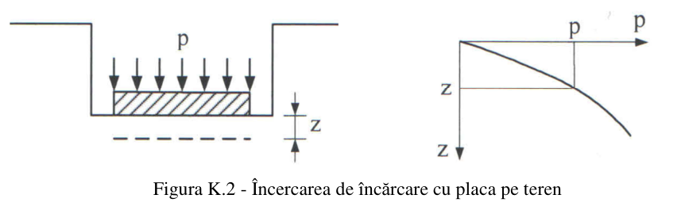
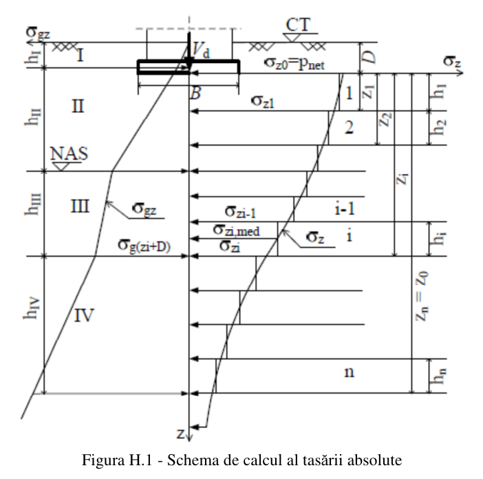
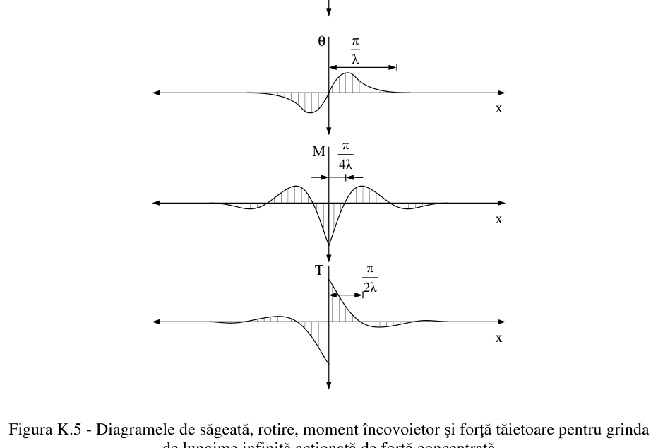

Antet raport de calcul · date proiect — apar pe breviarul exportat
Ce este coeficientul de pat
În modelul Winkler, terenul se înlocuiește cu resoarte independente. Coeficientul de pat ks este factorul de proporționalitate dintre presiunea de contact și tasare — rigiditatea resortului.
Unitate: kN/m³ (din p [kN/m²] ÷ s [m]). Valori uzuale 10³…10⁵ kN/m³.
Notație: aici tasarea (deformația verticală) e notată s peste tot, ca în Anexa H și K.10. În relația K.5 normativul o scrie cu z — aceeași mărime.
Limitele modelului Winkler (NP 112, K.3 · II.4.1)
K.3 (2): „Resoartele permit determinarea deformației terenului aflat sub fundație, dar nu și în afara bazei acesteia.”
II.4.1 (4): modelarea cu resoarte „este corectă atât timp cât nu apar întinderi pe suprafața terenului” — la desprinderi, resorturile nu trebuie să preia întindere.
Pentru interacțiune pe zonă extinsă în jurul fundației se folosește modelul mediului continuu (Boussinesq, K.4) sau hibrid (Anexa L.6).
Ce metodă aleg?
Pornește de la datele pe care le ai despre teren.
Probă de încărcare cu placa NP 112 · K.3.1.1
Metoda de referință, in situ. Citește un punct din zona cvasi-liniară a diagramei presiune–tasare; coeficientul plăcii se corectează pentru lățimea reală a fundației.
Despre metodă · NP 112, K.3.1.1
Punctul (p, s) se ia din zona de comportare cvasi-liniară a diagramei încărcare–tasare (paragraful 1).
Placa de probă este pătrată, cu latura Bp = 0,30 m. Diagrama depinde de dimensiunile și rigiditatea plăcii, deci k′s se corectează cu coeficientul α pentru lățimea reală B a fundației (paragrafele 2–3).
- pământuri coezive: α = Bp/B (dependență ~liniară de B);
- pământuri necoezive: α = [(Bp+0,3)/2B]² (efect de scară mai accentuat).

Sursă: NP 112/2014, Figura K.2Din modulul de deformație liniară NP 112 · K.3.1.2 (1)
Estimare din parametrii elastici, cu un coeficient de formă km funcție de raportul L/B (Tabelul K.1, interpolat automat).
Despre metodă și nota dimensională a lui α
Es și νs sunt parametrii de compresibilitate (Anexa J); km se citește din Tabelul K.1 după raportul L/B.
În K.8 normativul definește explicit doar km. Mărimea α nu e precizată lângă formulă. Pentru ca ks să rezulte în kN/m³, α se ia ca dimensiune caracteristică a tălpii (lungime, în m). Cu α = L/B (adimensional) rezultatul iese în kN/m² — semnalat la calcul.
Pentru valori robuste preferă metoda edometrică (K.9), proba cu placa sau calculul invers.
Din modulul edometric NP 112 · K.3.1.2 (2)
Relație directă și dimensional consistentă — recomandată pentru valori numerice.
Despre metodă · NP 112, K.3.1.2 (2)
Modulul edometric Eoed provine din încercarea de compresiune în edometru (deformație laterală împiedicată). Relația ks·B = 2·Eoed este dimensional neambiguă, deci preferată când dispui de Eoed.
Valori de catalog NP 112 · Tabelul K.2
Pentru faze preliminare. Valorile sunt date pentru B = 1 m și încărcări statice; pentru lățimi diferite se aplică efectul de scară.
Despre metodă · NP 112, K.3.1.3
Tabelul K.2 dă intervale orientative pentru B = 1 m și încărcări statice, funcție de indicele densității ID (pământuri grosiere) sau de indicele de consistență IC (pământuri fine). La IC sub 0,25 normativul nu dă valoare — modelul Winkler simplu nu e adecvat.
Calcul invers din tasare NP 112 · K.3.1.4
Calibrează resortul astfel încât să reproducă tasarea reală a fundației. Tasarea probabilă s se determină conform Anexei H.
Despre metodă · NP 112, K.3.1.4
Valabilă când dispui de modulii Es pentru toate stratele din zona activă; tasarea s se calculează conform Anexei H (vezi și modulul „Teren stratificat”). Este modul cel mai fidel terenului real, fiindcă leagă ks direct de tasarea calculată.
Teren stratificat NP 112 · Anexa H + K.10
Pentru profil cu straturi de rigidități diferite. Aplicația împarte terenul în straturi elementare, distribuie efortul vertical (α₀, Tab. H.3), determină zona activă (σz ≤ 0,2·σgz; 0,1 sub straturi moi), însumează tasarea (ec. H.5) și întoarce ks = pef / s.

Straturi sub talpă
| # | Grosime h [m] | Es [kPa] | νs | γ [kN/m³] | șterge |
|---|
Despre metodă · NP 112, Anexa H (H.1–H.5)
Straturi elementare (H.2.1.3): terenul sub talpă se împarte în straturi omogene cu grosime < 0,4·B.
Efort vertical (H.2): σz = α₀·pnet, cu α₀ din Tabelul H.3 funcție de L/B și z/B; pnet = pef − γ·D (H.1).
Zona activă (H.3): se limitează la adâncimea unde σz ≤ 0,2·σgz; sub un strat foarte compresibil sau cu Es ≤ 5000 kPa, limita coboară până la σz ≤ 0,1·σgz (H.4).
Tasarea (H.5): s = 10³·β·Σ(σz,med·hi/Esi), cu β = 0,8.
Coeficientul de pat rezultă apoi din K.10: ks = pef / s.
Strat de grosime finită (H.2.3 · ec. H.8): s = 10³·m·pnet·B·Σ (Ki − Ki−1)/Esi·(1 − νsi²), cu m din Tabelul H.5 (funcție de z₀/B) și K din Tabelul H.6 (funcție de z/B și L/B).
Alegerea metodei (automată): aplicația comută pe metoda stratului de grosime finită (H.2.3) când B > 10 m cu zona activă Es > 10.000 kPa, sau când în zona activă apare un strat practic incompresibil (Es > 100.000 kPa); altfel folosește însumarea pe straturi elementare (H.2.1). Rezultatul indică explicit metoda aplicată.
Grindă pe mediu elastic NP 112 · K.3.2.1
Coeficientul caracteristic λ și lungimea elastică le guvernează comportarea grinzii de fundare pe resoarte Winkler.

Despre metodă · NP 112, K.3.2.1
Lungimea elastică le = 1/λ arată cât de departe se „resimte” o forță concentrată. Dacă deschiderile dintre stâlpi sunt mult mai mici decât le, grinda lucrează ca rigidă; dacă sunt comparabile sau mai mari, ca flexibilă, iar eforturile se determină cu funcțiile f₁…f₄ (tabelele K.3–K.6) sau prin metode numerice (K.3.3).
Tabelul K.1 — coeficientul km
Funcție de raportul L/B; aplicația interpolează liniar între valori.
| L/B | km | L/B | km |
|---|
Tabelul K.2 — valori orientative ks
Pentru B = 1 m și încărcări statice.
Pământuri grosiere · ID
| ID | 0 ÷ 0,33 | 0,34 ÷ 0,66 | 0,67 ÷ 1,00 |
|---|---|---|---|
| ks [kN/m³] | 14 000 ÷ 25 000 | 25 000 ÷ 72 000 | 72 000 ÷ 130 000 |
Pământuri fine · IC
| IC | 0 ÷ 0,25 | 0,25 ÷ 0,50 | 0,50 ÷ 0,75 | 0,75 ÷ 1,00 |
|---|---|---|---|---|
| ks [kN/m³] | — | 7 000 ÷ 34 000 | 34 000 ÷ 63 000 | 63 000 ÷ 100 000 |
Tabelul H.3 — coeficientul α₀
Distribuția efortului vertical în centrul fundației, funcție de z/B și L/B (interpolat în modulul stratificat).
| z/B | L/B = 1 | L/B = 2 | L/B = 3 | L/B ≥ 10 |
|---|